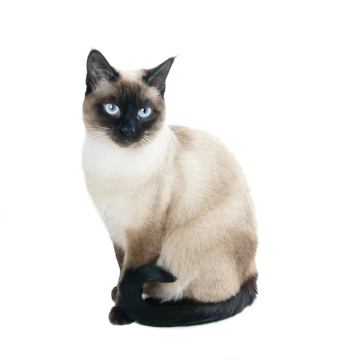

Siamese (Сіамська)
Енергійна, комунікабельна, любить увагу
Походження: Таїланд (Сіам)
Особливості: Мускулисте тіло, характерний забарвлення "point".
Догляд: Помірний, коротка шерсть.
Популяція: Висока (популярна порода).
Породи котів • Догляд • Походження
На цьому сайті ти знайдеш стислу, але корисну інформацію про різні породи котів: їх походження, характер, догляд, приблизну популяцію та особливі примітки.
Історія та регіони походження
Рекомендації по харчуванню, чистці та ветеринарії
Рівень поширеності та статус
Енергійна, комунікабельна, любить увагу
Походження: Таїланд (Сіам)
Особливості: Мускулисте тіло, характерний забарвлення "point".
Догляд: Помірний, коротка шерсть.
Популяція: Висока (популярна порода).
Велика, доброзичлива, з густою шерстю
Походження: США (Нью-Інгленд)
Особливості: Великий розмір, довга шерсть, "русалочний" хвіст.
Догляд: Регулярне вичісування.
Популяція: Помірна, дуже популярна в шоу.
Спокійна, ніжна, з довгою шерстю
Походження: Близький Схід / Персія
Особливості: Плоска мордочка, довга шерсть.
Догляд: Щоденне вичісування та купання за потреби.
Популяція: Висока, але потребує ретельного догляду.

Дикий вигляд, активний та грайливий
Походження: Гібрид домашньої та азіатської дикої кішки
Особливості: Лускате забарвлення, активний темперамент.
Догляд: Звичайний; любить ігри та водні забави.
Популяція: Помірна.

Лисий вигляд, теплий на дотик
Походження: Канада (порода шляхом селекції)
Особливості: Відсутність шерсті, потребує особливого догляду шкіри.
Догляд: Регулярне купання та захист від сонця.
Популяція: Невисока, екзотична порода.
Спокійна, добре ставиться до людей, лапка-«лялька»
Походження: США
Особливості: Великі, ніжні; відомі "розслабленою" поведінкою при піднятті.
Догляд: Помірний; слідкувати за шерстю.
Популяція: Помірна, зростає популярність.